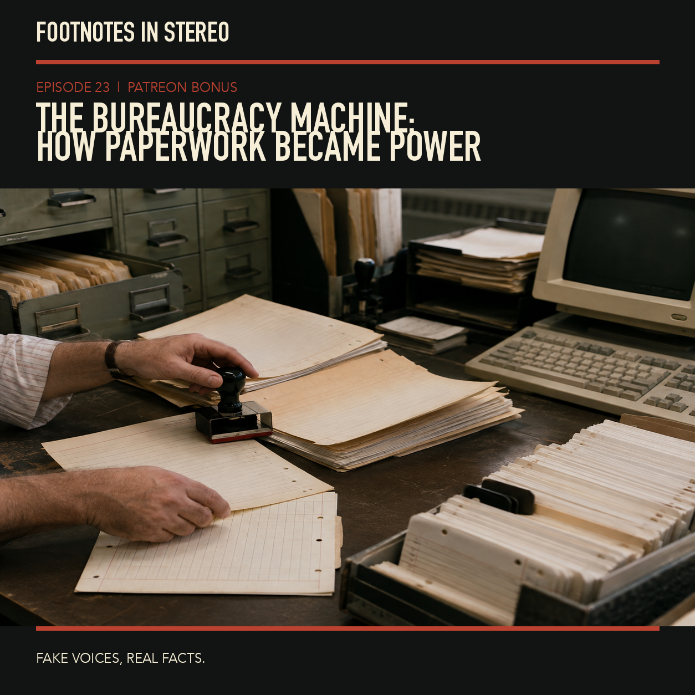

The Bureaucracy Machine: How Paperwork Became Power
Mira Vale and Theo Arlen trace the long history of bureaucracy, from paper files and forms to the digital systems that now decide who can access benefits, prove an identity, cross a border, or challenge a government decision. Paperwork is often treated as administrative background noise. In practice, it can decide whose time counts, whose story is legible, and who gets locked out. The episode follows the rise of records-based administration, the hidden costs of forms and compliance, and the shift from filing cabinets to automated decision systems. It asks what changes when a rule becomes a database field, and why an error can become harder to correct once an institution treats it as data. Created with Gemini Notebook. The conversation and voices in this episode were generated with Gemini Notebook. Fake voices, real facts.
Sources
- Administrative Burden - Russell Sage Foundation
- Administrative Burdens in the Social Safety Net - American Economic Association
- Administrative Burdens in Social Policy - Bloomsbury Academic
- Managing unintended consequences of algorithmic decision-making: The case of Robodebt - Policy & Politics
- Exclusion by Design: How digital identity systems can exclude - Privacy International
Transcript
Machine transcript; lightly formatted and subject to correction.